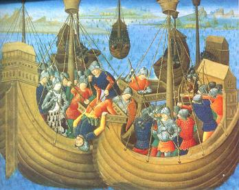
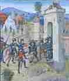
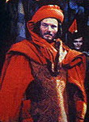
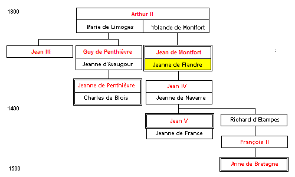

Jeanne La Flamme
Joan the Arsonist
Dialecte de Cornouaille
|
- puis, dans le Barzhaz de 1845. Il doit l'avoir composé avant 1840, car, comme le signale F. Gourvil (p. 356 de son "La Villemarqué"), "on en trouve la traduction avec de notables variantes dans le roman historique de Pitre-Chevalier portant le même titre." F. Gourvil considère ce chant comme une invention, tout comme aurait été inventé ce Guillaume Le Foll absent des registres de Plounévez-Quintin pour la période comprise entre 1800 et 1880. Il voit la "preuve" de cette tromperie dans le fait que ce chanteur qui est ici un "aveugle" devient, dans les notes du chant suivant qui sont d'un grand lyrisme (Tome 1, P. 334 de l'édition 1845), un compagnon de Chouannerie de Tinténiac, comme s'il était impossible qu'un ancien Chouan ait pu être atteint de cécité après les guerres de l'ouest. Il affirme en outre de façon péremptoire: "En 1840, La Villemarqué n'avait sûrement pas encore visité cette partie de la Haute-Cornouaille." Selon Luzel et Joseph Loth, cités (P. 389 de son "La Villemarqué") par Francis Gourvil qui se range à leur avis, ce chant historique ferait partie de la catégorie des chants inventés . |
 |
- then in the 1845 edition of the Barzhaz. La Villemarqué should have processed this song before 1840 since, as stated by F. Gourvil (p. 356 of his "La Villemarqué"), "a translation thereof with noticeable changes will be found in the homonymous historical novel by Pitre-Chevaler" F. Gourvil considers this song as a forgery. Also invented was, in his opinion, this Guillaume Le Foll who is missing in the ledgers of parish Plounévez-Quintin for the time between 1800 and 1880. He considers a "proof" for this fraud that the singer who is here a "blind man" should become in the most lyrical "Notes" to the ensuing song (Book 1, P. 334 in the 1845 edition), a comrade-in-arms of Tinténiac's, as if it were impossible that a former Chouan soldier could have been stricken with blindness after the "western wars". He also asserts peremptorily: "In 1840, La Villemarqué was sure not to have yet visited this part of Upper-Cornouaille." According to Luzel and Joseph Loth, quoted by Francis Gourvil (p. 389 of his "La Villemarqué"), this historical song was " invented " by its alleged collector. |
Ton
(Mi majeur, même mélodie que La bataille des Trente )
| Français | English |
|---|---|
|
I
1. - Franchissant le mont, je crois voir Un grand troupeau de moutons noirs; 2. - Des moutons noirs, je ne crois pas. Ce sont bien plutôt des soldats, 3. Des soldats français qui s'en vont Mettre le siège à Hennebont.- II 4. Alors qu'ouvrant la procession Au tintement des carillons, 5. Jeanne sur un palefroi blanc, Et sur les genoux son enfant, 6. S'avançait, tous les habitants D'Hennebont allaient l'acclamant: 7. - Dieu sauve la mère et le fils, Confondant ces Français maudits! - 8. La procession se terminait, Quand on ouït les Français crier: 9. - C'est au gîte que nous allons Prendre vifs la biche et le faon! 10. Nous avons, pour les attacher L'un à l'autre, chaînes dorées.- 11. Jeanne la Flamme répondit, Du haut de la tour, ce qui suit: 12. - Non, la biche s'échappera. Le méchant loup , peut-être pas-... 13. Et pour l'empêcher d'avoir froid, Sa tanière on lui chauffera. - 14. Achevant cette imprécation, Elle retourne en sa maison. 15. Puis elle endossa sa cuirasse. Elle se coiffa d'un noir casque; 16. Et d'un glaive tranchant s'arma. Elle choisit trois cents soldats. 17. Puis, un tison rouge à la main, Sort de la ville par un coin. III 18. Or, pour le moment, les Français Chantaient bruyamment, attablés. 19. A l'abri des tentes fermées, Dans la nuit, les Français chantaient 20. Quand au loin sonna le déchant ! Une étrange voix déclamant: 21. "Plus d'un qui rit ce soir devra Pleurer quand le jour sera là. 22. "Fini le pain blanc pour plus d'un: : La terre froide est pour demain. 23. "Qui boit du vin rouge à présent, Demain devra verser son sang. 24. "Plus d'un qui doit finir en cendre Crâne: Il ne perd rien pour attendre." 25. Beaucoup, abrutis de boisson, Sur la table appuyaient le front, 26. Quand fusèrent des cris affreux: - Le feu! Le feu! Sauve qui peut! 27. Le feu! Le feu! Vite, fuyons Jeanne la Flamme et ses brandons -" 28. Oui, Jeanne est la plus téméraire Des femmes qu'il y ait sur terre. 29. Jeanne avait mis le feu vraiment Aux quatre coins du campement; 30. Le vent propageait l'incendie Illuminant la sombre nuit. 31. Voilà que les tentes flambaient, Que les Français étaient grillés, 32. Et trois mille d'entre eux brûlèrent, Seuls cent d'entre eux en réchappèrent. IV 33. Le lendemain, à sa fenêtre, Souriante, on la vit paraître. 34. Elle tenait les yeux fixés Au loin, sur le camp calciné, 35. Ces monceaux de cendres fumantes Marquant l'emplacement des tentes. 36. Jeanne, le sourire radieux Disait: - Quelle écobue ! , mon Dieu! 37. Une belle écobue, pardi! Pour un grain, nous en aurons dix! 38. Au temps jadis on disait vrai: " Rien ne vaut les os des Français, 39. Les os des Français bien broyés, Pour faire lever notre blé. " loup = Charles de Blois. "Bleiz" signifie à la fois "loup" et "Blois" (retour) déchant = allusion au chant alterné breton (kan ha diskan). (retour) écobuer = arracher d'un terrain les herbes qui le couvrent, les brûler en tas avec la couche superficielle de terre et répandre la cendre sur le sol. . Pour plus de renseignements, cf. "La filleule de Du Guesclin . (retour) (Traduction: Ch.Souchon (c) 2008) |
I
1. - Say, what is moving o'er the dune? A flock of black sheep, I presume? 2. - T' is not a flock of black sheep, no, Soldiers, I would rather say, though. 3. What's coming is a French army To besiege Hennebont, seemingly - II 4. The duchess Joan was proceeding In town, prompting all bells to ring. 5. As she rode on her white palfrey With her little son on her knee. 6. Everywhere did the Hennebont folks On her way cheer her and exult: 7. - God save the mother and the son! May God the accursed French confound! - 8. When the parade came to an end French voices were heard who exclaimed: 9. - We'll catch alive, if you don't mind, In their den the fawn and the hind! 10. We have brought gold chains to bind them Together, when we go again.- 11. Joan the Flame's answer sounded sour, That came from the top of the tower: 12. - It's not the hind that will be caught. For the bad wolf you should take thought! - 13. Over the night if he is cold We are going to heat his hole. - 14. She said and rushed down as if she Had been stung by a honey bee. 15. An iron cuirass she has donned, A black helmet she has put on; 16. And a sharp steel sword has taken And three hundred men has chosen. 17. She has picked up a glowing brand, Left the town with it in her hand. III 18. The French were by then merrily Revelling and singing gaily. 19. Packed into their well-closed tents The French were engrossed in their chants, 20. That evening, when a distant voice Was heard at which no one rejoiced : 21. " The many who laugh this evening Before sunrise will be crying; 22. "Many a man who eats white bread Into earth eater will be bred 23. " Many a man who drinks red wine Will be taught to bleed and to whine. 24. " Whether you will or not, you must : Be turned to ashes, dust to dust! " 25. So many of them now were slumped Over the tables, were blind drunk, 26 Suddenly in alarm they cry: - Run for your life, boys, fire! fire! 27. Fire! boys, let us flee! Come on! Fire lit by the Duchess Joan! - 28. Jenny the Flame the boldest lass The earth has ever borne, alas! 29. Joan had set fire with a brand On the four corners of the camp. 30. And the wind all around spread it And the dark night was brightly lit; 31. So that the tents were all aflame, And the French roasted in their frames. 32. To ashes burnt were three thousand. Escape could a hundred of them. IV 33. Jenny the Flame the next morning Out of her window leant smiling 34. And the distant view she enjoyed Of the camp by the fire destroyed, 35. Of the smoke that rose from the tents, All to small mounds of ashes turned. 36. Arsonist Joan smiled next morning: "My God, Was that fine weed burning! ! 37. Fine weed burning it was, indeed For one grain sown, ten it shall yield! 38. They told the truth, in bygone days: Bones of the French are beyond praise 39. Ground bones of the French burnt alive To make our wheat come up and thrive!" wolf=Charles of Blois. "Bleiz" means both "wolf" and "Blois" (retour) 'Distant voice': in Breton, 'diskan" = Joan's answer is compared with the Breton alternate song (kan ha diskan). (retour) 'Weed burning', in Breton 'marradeg' = reclaiming fallow land, by burning weeds with the superficial ground layer and spreading the ashes over the soil . For more information, see. "Du Guesclin's godchild" . (retour) (Transl. Ch.Souchon (c)2008) |
Cliquer ici pour lire les textes bretons (versions imprimée et manuscrite).
For Breton texts (printed and ms), click here.

|
Les chanteurs d'Histoire
Si l'on excepte le "Faucon" qui a trait, non à des événement de 1008 comme le pense La Villemarqué, mais à une révolte paysanne survenue en juin 1490, aucun des chants historiques abordés jusqu'ici ne décrivait de faits précis confirmés par les chroniqueurs. Il en va autrement avec "Jeanne la Flamme" et les chants suivants. Dans sa contribution à l'"Histoire littéraire et culturelle de la Bretagne", volume 1 (1993), le linguiste Léon Fleuriot (1983- 1987) a montré qu'il existait en Bretagne dès le 12ème siècle des "Cantores historici" qui gardaient en mémoire des événements anciens et les célébraient dans leurs chants. C'est ainsi , comme l'indique M. Donatien Laurent dans l'article intitulé "Culture et tradition orale dans la Bretagne ducale (14-15ème siècles)", que Jean-Marie de Penguern (1807 - 1856) recueillit un chant, les "Loups de la mer" , qui semble se rapporter à un raid de Vikings au Yaudet, survenu en 836. L'événement est mentionné, en 1582, par l'historien Bertrand d'Argentré dans son "Histoire de Bretagne" qui traduit en latin la "Cronicque" de son oncle Pierre Le Baud , tout en la prolongeant jusqu'à François Ier. D'Argentré ajoute que l'on "chante encore quelques vieux vers en breton" sur la prise du Yaudet. On est donc en présence de la transmission orale d'un fait historique sur neuf siècles. Avec le présent fait d'armes nous abordons la guerre de succession du duché de Bretagne (1341 -1364) . Ce chant a été noté par La Villemarqué après voir été transmis oralement sur cinq siècles "seulement". Ces faits sont également relatés par Jean Froissart (1333 -1400), le chroniqueur de la guerre de Cent ans au tome I, chapitre 173 de ses Chroniques. Le siège de Hennebont  En 1341 , à la mort sans héritier du Duc Jean III, son demi-frère, Jean de Montfort (1294 - 1345), allié des Anglais, disputa le duché à sa nièce, Jeanne de Penthièvre , l'épouse de Charles de Blois, soutenu par le roi de France.Lorsque Montfort, reconnu par les Etats de Bretagne comme légitime duc, fut fait prisonnier à Paris, son épouse, Jeanne de Flandre déclara à ses barons: "Montfort est pris, mais rien n'est perdu, ce n'était qu'un homme. Voici son fils, qui sera, s'il plait à Dieu son 'restorier'". Puis elle s'enferma dans Hennebont qui fut assiégé par Charles de Blois, l'époux de Jeanne de Penthièvre (d'où le nom de "Guerre des deux Jeanne" donné à cette guerre de vingt ans). Après avoir repoussé toutes les attaques, avec une incroyable audace, Jeanne de Flandre alla elle-même, mettre le feu au camp ennemi, ce qui lui valut le surnom de "Jeanne-la-Flamme". Après cette diversion, elle ramena d'Auray 600 chevaliers ce qui lui permit de libérer la ville. Selon une autre version, "Jeanne la Flamme" serait l'abréviation de "Jeanne la Flamande" et ce surnom aurait été mis après coup en rapport avec l'exploit d'Hennebont. La pauvre Jeanne soumise à la mort de son époux en 1345 à de trop rudes épreuves sombra dans le désespoir et la folie et dut être transportée en Angleterre où elle mourut en 1374 Francophobie, Anglophobie Ceux qui seraient choqués par la haine des Français qui s'exprime avec tant de vigueur dans ce chant, (par des paroles imputées toutefois à une étrangère), pourront se rassurer en lisant le chant suivant, "la Bataille des Trente" , où la sympathie du barde, sans doute un autre, va aux partisans de Charles de Blois et où l'on se réjouit de la défaite des Anglais. 9 années séparent ces deux épisodes! Onze ans avant la guerre de 1870 et l'annexion de l'Alsace-Lorraine, les traducteurs allemands du Barzhaz, M.Hartmann et L.Pfau, ajoutent ce commentaire: "On observe le même phénomène dans le midi chez les contemporains de Bertrand de Born. Le patriotisme français spécifique n'avait cours que dans une petite partie de la France d'aujourd'hui et seulement de façon épisodique, quels que soient les efforts faits par les historiens français modernes pour nous faire croire le contraire." Un troisième chant, l'"hermine" , met tout le monde d'accord, en souhaitant la perte des deux belligérants! Francis Gourvil dans son "La Villemarqué", p. 390 et ss. a examiné les 20 chants où apparaissent ces vitupérations nationalistes, depuis "Le Vin des Gaulois" (cep et feuille à toi, vil fumier!) jusqu'au "Temps passé" (où il est dit que les conscrits bretons sont envoyés, hors de Basse Bretagne dans les pays "étrangers"). Il conclut qu'on ne trouve dans aucun monument authentique de la tradition orale de Basse-Bretagne (gwerzioù, sonioù, chansons sur feuilles volantes) trace d'une telle animosité haineuse ou méprisante contre les non-Bretons. Lorsque les chants du Barzhaz ont des équivalents dans d'autres collectes (le "Chevalier du roi" et le "Maure du roi" de Lez-Breizh, la "Filleule" et le "Vassal de Duguesclin", le "Page de Louis XIII"), ces derniers démentent l'attribution de sentiments xénophobes à leurs personnages. Gourvil considère en conséquence que ces passages, sinon ces chants dans leur entier, sont des inventions de La Villemarqué, "dès lors qu'il y est question de la Bretagne et des Bretons considérés en tant qu'entités géographique ou politique". Les commentaires à propos des chants Le tribut de Noménoé et Les jeunes hommes de Plouyé (entre autres) montrent que cette affirmation est sans doute trop hâtive. La "Compillation des cronicques et Ystores des Bretons" Pierre Le Baud (1450 - 1505), aumônier d'Anne de Bretagne est un historien qui a laissé plusieurs ouvrages sur la Bretagne dont la "Cronicque" achevée en 1480. La miniature en haut de cette page en est extraite. L'artiste n'est pas connu Dans la guerre de succession de Bretagne , Charles de Blois reçut l'aide de chefs militaires tels que Louis d'Espagne , amiral de France, qui s'était fait une réputation de pillard des villages côtiers de la Bretagne. Charles de Bois était aidé par un autre prince, Robert d'Artois (1287 - 1342), bien connu des lecteurs des "Rois maudits" de Maurice Druon (Jean Piat à la télévision!). Pour mémoire: suite à un procès retentissant, il avait trouvé refuge auprès d'Edouard III d'Angleterre qui l'avait chargé du commandement d'une armée navale pour aider Jean de Montfort. La miniature représente la rencontre, sous la pluie, entre les deux flottes, le 18 août 1342, au large de la Bretagne: Montfort à gauche, Blois à droite. Jeanne de Flandre , de retour d'une visite à la cour d'Edouard III, casquée et parée de l'hermine bretonne et du léopard anglais pourrait être le personnage principal de la nef de gauche Le combat ne fut pas décisif, mais permit à Robert d'Artois de débarquer - et d'aller se faire tuer sous les remparts de Vannes. |
The History singers
If one excepts the "Hawk" that recounts a country folk uprising in June 1490 and not events of the year 1008, as La Villemarqué assumes, none of the historical songs addressed so far did report unquestionable occurrences confirmed by chroniclers. The same does not apply to "Joan the Arsonist" and some subsequent songs. In his contribution to the "Literary and Cultural History of Brittany", Volume I, (1993), the linguist Léon Fleuriot (1933 - 1987) has proved the existence as far back as in the 12th century of Breton "Cantores Historici" whose assignment was to record events of bygone days and celebrate them in their songs. An instance of such recording is quoted by Mr Donatien Laurent in the article titled "Culture and Oral Tradition in the duchy of Brittany (14th-15th centuries)". Jean-Marie de Penguern (1807 - 1856) collected a song, the "Sea Wolves" , that seems to refer to a raid of the Northmen on the town Yaudet in 836. The event is mentioned in 1582 in the "History of Brittany", a Latin translation of his uncle Pierre Le Baud 's "Cronicque" by the historian Bertrand d'Argentré, who states in addition that "old Breton verses about the capture of Yaudet are still sung nowadays". The inference is that the memory of a historical event was orally handed down to us over nine centuries. The present feat of arms introduces the War of the Breton Succession (1341 - 1364). . It is recounted in a song that was orally forwarded to the present time over a period of "only" five centuries. These facts are also related by Jean Froissart (1333 - 1400), the chronicler of the war of Hundred Years in his "Chroniques" (Book 1, Chapter 173). The siege of Hennebont. In 1341 , on the death of the heirless Duke of Brittany, John III, his half-brother, John of Montfort (1294 - 1345), supported by King Edward III of England and John's niece, Joan of Penthievre, who enjoyed the backing of the king of France, contested the Duchy of Brittany. When Montfort, acknowledged by the States of Brittany as their rightful ruler, was prisoner in Paris, his wife, Joan of Flanders declared to his barons: "Montfort is captured, but he was just a man. Here is his son who shall be his restorer with God's help." Then she took refuge in the the stronghold Hennebont that was besieged in vain by Charles of Blois, leader of the French party and John of Penthièvre's husband (hence the name of "War of the two Joans" given to this twenty year conflict). After fighting off all attacks against the town, Joan of Flanders had the amazing audacity, to set fire, herself, on the camp of the enemies, which brought her the nickname "Janedig Flamm (Joan the Arsonist)". After this diversion, she brought from Auray 600 knights who enabled her freeing the town. There is another version to the effect that "Joan the Flame" was the abbreviation of "Joan the Fleming" (or "Jannedig Flamm" was for "Janned Flaminkez") and this nickname was put afterwards in relation with the Hennebont deed, which is mentioned by Froissard (Book I, chapter 173). The poor woman lost her husband in 1345. She could not stand this new ordeal and sank into despair and lunacy. She was taken to England where she died in 1374. Francophobia, Anglophobia Whoever is shocked by the hate for the French so eloquently expressed in this song, (in words ascribed to a foreigner, however), should satisfy himself, by reading the next ballad, "the Combat of the Thirty" , that only nine years later, it is the French party of Charles of Blois that enjoy the sympathy of the bard, very likely somebody else, who rejoices at the defeat of the Saxons! Eleven years before the Franco-Prussian war of 1870 and the annexation of Alsace-Lorraine, the German translators of the Barzhaz, M.Hatmann and L.Pfau add a comment of their own: "The same remark applies to the South of France and the time of Bertrand de Born. Specific French patriotism was a commonly held idea only in a small portion of the present French territory and at sporadic intervals, however great endeavours are made by modern French historians to make us believe the contrary." Besides, a third song, "The Stoat" , ends the disagreement by calling down a curse on both antagonists! Francis Gourvil in his study "La Villemarqué", p. 390 and ff. perused the score of ballads featuring these nationalistic vituperations, from the "Wine of the Gauls" (Gaul, vine stem and leaves and manure be yours!) to the "Olden times" (where we read that Breton conscripts who are enlisted outside Lower Brittany are on their way to "alien" lands). He infers that in no genuine monument of oral tradition in Lower-Brittany (gwerzioù, sonioù, broadside songs) may we find the least trace of such hateful or scornful animosity against non-Bretons. Whenever there is a counterpart in an other collection to a Barzhaz song (the "King's Knight" and the "King's Blackamoor" which are parts of the "Lez-Breizh" ballad, "Duguesclin's Godchild" and "Duguesclin's Vassal", the "Page of Louis XIII"), the protagonists in the counterpart song appear to be free of xenophobic feelings. Gourvil considers therefore the passages expressing them, if not the whole songs where they appear, as inventions of La Villemarqué, "inasmuch as Brittany and the Bretons are addressed as a whole geographical or political entity". Our comments of the songs Noménoé's Tribute and The youths of Plouyé (among others) show that this could be a somewhat rash statement. The "Compillation des cronicques et Ystores des Bretons" Pierre Le Baud (1450 - 1505), chaplain to Anne of Brittany is a historian who left several works on Brittany, the best known of which is the "Cronicque", completed in 1480. The miniature on top this page is taken from it . The artist is not known. During the War of the Breton Succession , Charles of Blois was supported by military chiefs like Louis of Spain , Admiral of France, who was known as a famous pillager of the Breton coastal villages.  As for Charles of Blois he was backed by another prince, Robert of Artois (1287 - 1342) well known to the readers of Maurice Druon's book "The Damned Kings" (i.e. the unfortunate sons of king Philipp the Fair) (and the fans of the homonymous TV series where Robert was played by Jean Piat!) Robert III of Artois had, after a tremendous trial, found a refuge at the court of the king of England, Edward III, who entrusted him with the command of a fleet in support of John of Montfort.The miniature above presents the engagement (in the pouring rain) between the two fleets, on August 18th, 1342, off the Breton shores. Montfort to the left, Blois to the right. Joan of Flanders , back from a visit to Edward III's court, wearing a helmet and a coat adorned with ermine and English leopard, could be the main character on the left hand ship. The naval combat was not conclusive, but Robert of Artois was able to land on the Breton shore and to proceed to Vannes where he was wounded to death. |
.
